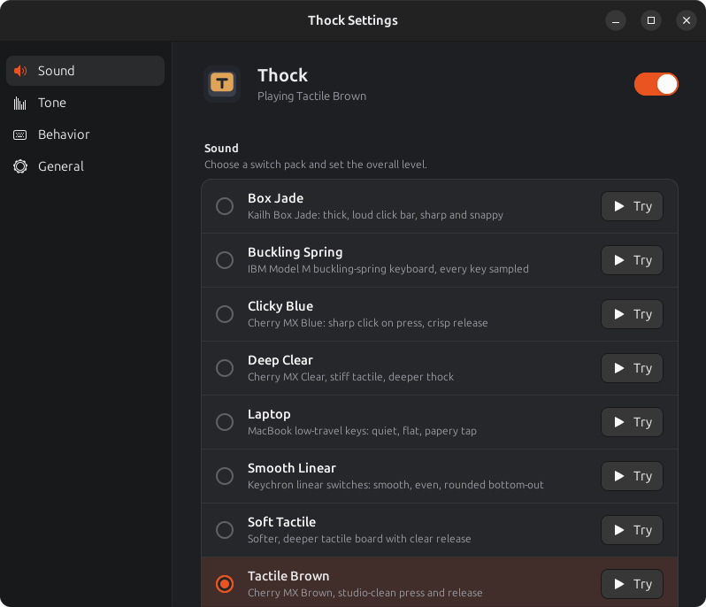
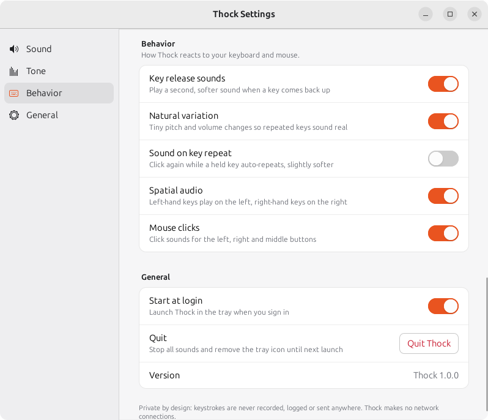
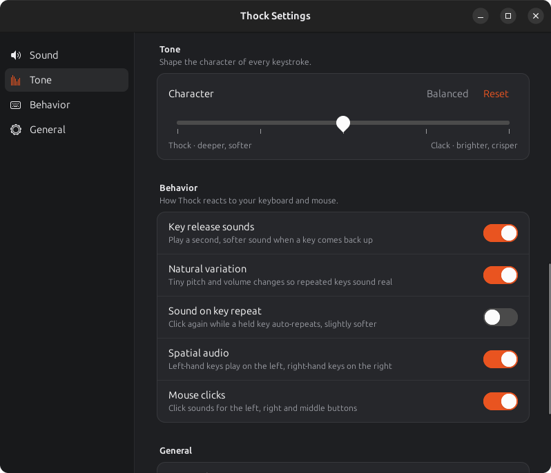

11 sound packs
Buckling Spring, Clicky Blue, Tactile Brown, Smooth Linear, Box Jade, Topre, Vintage Alps, Typewriter, Laptop and more. Try each one from the settings window.

Mechanical keyboard sounds for your Linux desktop.
Every key you press plays a real switch recording, from a buckling-spring IBM Model M to Topre, Box Jade and a vintage typewriter. It lives in your tray and stays out of the way.
Type the line below and hear Thock's own samples. Esc restarts.
Click here and start typingTap here to type. Sounds work best with a physical keyboard.
Done. Press Enter or choose New text for another line.
Install in one line
cd ~ && wget -qO- https://github.com/christophervistal25/thock/releases/latest/download/thock-linux.tar.gz | tar xz && cd thock && ./install.sh && bin/thock
Everything you need to make typing sound good, and nothing you don't.
Buckling Spring, Clicky Blue, Tactile Brown, Smooth Linear, Box Jade, Topre, Vintage Alps, Typewriter, Laptop and more. Try each one from the settings window.
Separate key-down and key-up sounds, with their own samples for Space, Enter and Backspace where the recording has them.
One tone slider shifts every pack from deep and soft to bright and crisp.
Keys on the left of your keyboard sound from the left speaker, keys on the right from the right.
Optional click sounds for the left, right and middle buttons.
Hold a key for one sound, or turn on sound on key repeat for a click on every auto-repeat.
Switch packs, volume, tone and every toggle from the tray menu. Starts at login if you want it to.
Samples are preloaded and mixed in a low-latency audio stream, so the sound lands with the keystroke.
Thock only looks at which key went down or up to choose and place a sound, then forgets it. Nothing you type is logged, stored or sent, and the app makes no network connections.
The settings window follows your system theme.




echo $XDG_SESSION_TYPEWayland sessions aren't supported yet: Wayland doesn't let apps hear system-wide key presses.
git clone https://github.com/christophervistal25/thock ~/thockcd ~/thock && ./install.shbin/thock. Look for the keycap icon in the top bar.Something not working? The README has a troubleshooting guide covering the common cases.
Every pack is a genuine recording shared under a free license. Most are CC0 (public domain). These need attribution under CC BY 4.0:
The typing test on this page plays lightweight 32 kHz copies of the same recordings, under the same licenses.
Full list of sources, authors and licenses: SOUNDS-LICENSES.md.